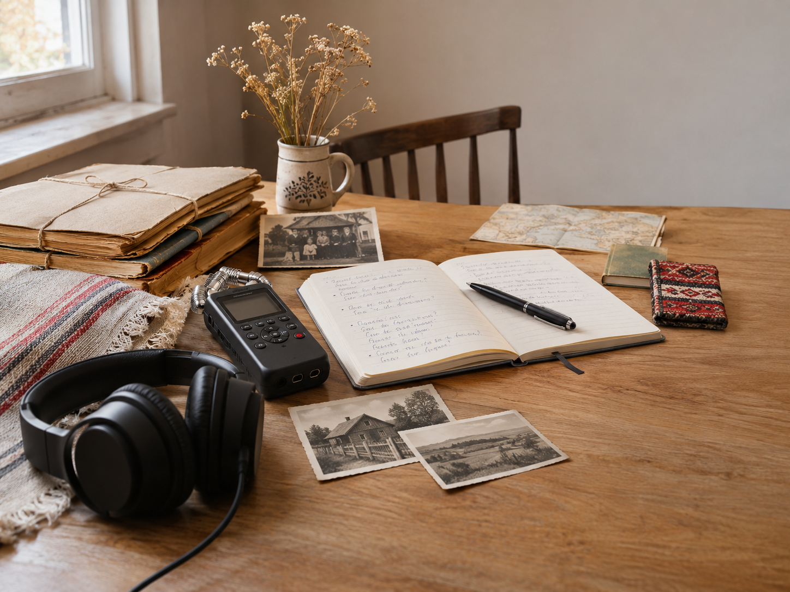
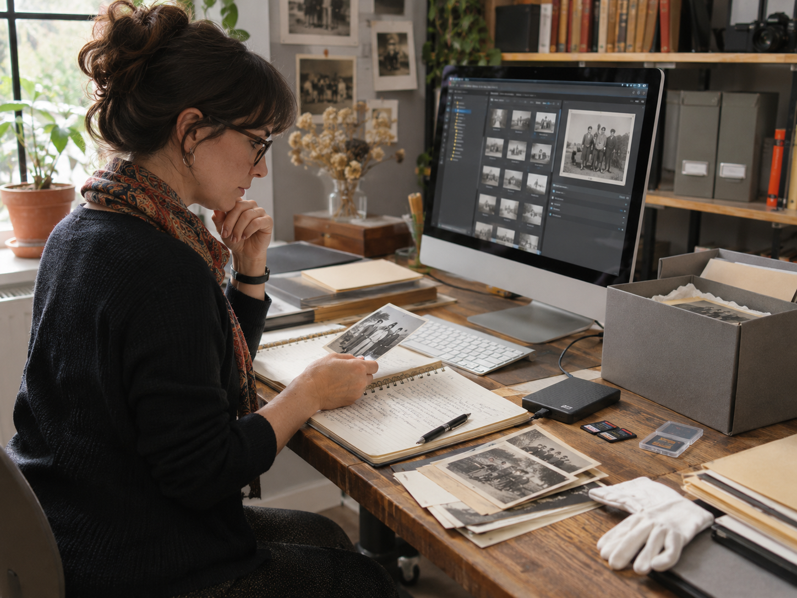

Какво е необходимо, за да запазим една човешка история? Достатъчно ли е да включим диктофон, да зададем няколко въпроса и да съхраним записа?
Всъщност това е само част от работата. Зад всеки документален разказ стоят разговори, проучване, обработка на материали и решения каква информация може да бъде споделена.
Добре съхранената история е не просто запис, а запис с контекст. Важно е да знаем кой разказва, при какви обстоятелства е направено интервюто и как може да бъде използвано то.
Този подход е в основата на „Научено без думи“ – първото издание на обществената ни програма „Неписаното“. В проекта ще участват 24 пълнолетни души от България и Гърция, организирани в 12 двойки. Целта е да документираме част от културната памет, която се предава между поколенията чрез ежедневни навици, знания и начини на общуване.
Всичко започва с разговор
Преди да пристъпим към записите, ще се запознаем с участниците и ще им обясним какво предстои. Ще обсъдим темите, за които желаят да говорят, начина на провеждане на интервютата и условията за съхраняване на материалите.
Ще използваме предимно отворени въпроси, които позволяват на хората сами да насочват разказа си.
Например вместо да попитаме „Какви добри навици наследихте от родителите си?“, можем да зададем въпроса „Има ли нещо, което правите по същия начин като човек от предишно поколение?“.
Разликата е съществена. Вторият въпрос не предполага предварително, че наследеният навик е положителен. Участникът може да разкаже както за нещо, което е запазил, така и за практика, която е решил да промени.
Не всичко може да бъде разказано с думи
Понякога една практика се разбира по-лесно, когато бъде показана. Това може да е начин за приготвяне на храна, специфично движение при упражняване на занаят или друг навик, усвоен чрез наблюдение.
Ако участниците желаят, ще документираме подобни действия чрез фотография и видео.
Важно е обаче да разграничаваме наблюдението на действителна практика от действие, повторено специално за камерата. Двете могат да бъдат полезни за проекта, но не са едно и също.
Целта ни е да съхраним не само как изглежда дадена практика, но и какво означава тя за хората, които я изпълняват.

Какво се случва със записите?
След приключване на интервютата материалите ще бъдат прегледани, описани и подредени в архив.
Към всеки запис ще добавим информация за участниците, датата, мястото, съдържанието и условията, при които материалът може да бъде използван. Ще се определя и кой има право на достъп до него.
Това е важна част от работата по съхраняването на културната памет. Без подобна информация един аудио- или видеофайл може да остане технически запазен, но с времето да загуби голяма част от своето значение.
Не всички материали ще бъдат публикувани. Работният архив и публичната дигитална колекция са две различни неща. В онлайн колекцията ще включим само подбрани свидетелства, за които участниците са дали необходимото съгласие.
Тя ще бъде достъпна на български, гръцки и английски език, като първото ѝ представяне е планирано за септември 2027 г.

От архивен материал до творческо произведение
Събраните истории няма да останат само в архива. Част от тях ще послужат за създаването на шест кратки документални филма и мултимедийна изложба с участието на независими творци.
Архивирането и творческата работа имат различни задачи. Документалният материал съхранява свидетелството и информацията за неговия произход, докато произведението може да предложи нов начин то да бъде възприето.
Затова ще обозначаваме ясно оригиналните записи и художествените интерпретации. Така творците ще могат да работят със собствен авторски подход, без произведенията им да бъдат представяни като необработени документални свидетелства.
Историите тепърва предстоят
„Научено без думи“ започва с въпроси, на които все още нямаме отговори. Не знаем какви истории ще ни разкажат участниците и как ще възприемат наученото от предишните поколения.
Именно затова искаме да ги чуем.
Ако сте пълнолетни и искате да разкажете за навик, знание или практика, предадени между поколенията, можете да кандидатствате за участие в проекта заедно с човек от друго поколение.
Кандидатстването е отворено до 20 декември 2026 г., а участието е безплатно.